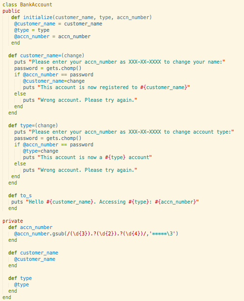

On Interface.
Today I was exposed to the idea of interface, or how much of a object should you expose to your users. A central component of good object-oriented design is understanding how much of your object to expose. Let's take a look at an example I created today.
In this challenge, I was asked to design a program that would allow users to create a new bank account. After thinking about what changes a user might want in creating a bank account, I set about creating the interface of my BankAccount class.
Notice the words in red; Public and Private. These words specify which methods are part of my BankAccount class's public interface or private interface. The private interface is an area that is never accessible to the user, therefore it should be a place to store information. The public interface is an area that is accessible to the user. Users can call methods in located here. For example, if a user accidentally entered in an extra letter in his name when he created a new bank account, he will need to be able to change it. However, I don't want anyone to be able to change the name of who the account is registered to, so I prompt the user to type in his account number.